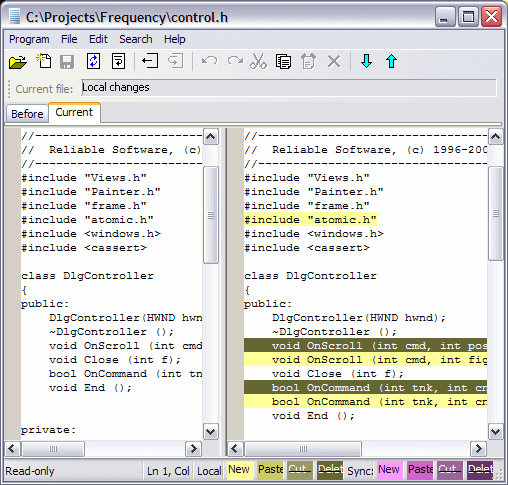

Code Co-op comes with a built-in viewer/editor/differ plus an alternative differ, the Beyond Compare Differ. The built-in editor is launched by double-clicking a file in the Files Area.
The Differ (either the built in or or the BC one, depending on the Program > Options settings) is launched in the following areas:
You can view and edit the contents of any file using the built-in editor. When you try to edit a checked-in file, you'll be prompted to check it out (this prompt can be suppressed).
If you are using the built-in differ, you will see two panes. The left pane is the editor and the right pane is the differential display. You'll notice that the left pane has multiple tabs:
Whe you are using the BC differ, you'll see the before and after versions side by side. The after version can be edited.
You can reviewing incoming changes by selecting an incoming script. In the details pane at the bottom you will see all the files affected by that script. Double-click on a file to view it in the differ. The BC differ will show you the before and after views. The built-in differ has a Current tab which will show the current version of the file. This version can be edited.
Note: editing a file in the Inbox area, that is before the script has been executed, will require a subsequent merge. It is recommended to first execute the script and then review it in the History tab, where the Current version can also be edited, without requiring a merge.
You can select any script in the History tab. The bottom pane will show the files changed by that script. When you double-click on a file, the differ will show the changes made by the selected script. If you are using the built-in differ, you will be able to edit the current version of the file while reviewing the script changes. This is a recommended procedure for reviewing scripts. The BC differ will show the changes, but it won't give you access to the current version for editing.

The above screen image is the result of double-clicking an edited file in the Check-in Area. The changes you see were made locally. Buttons on the toolbar are: Open, Create New, Save, Refresh, Line-wrap; Check out, Un-check-out; Undo, Redo, Cut, Copy, Paste, Delete; Next Change, Previous Change.
The differential display highlights the lines that were involved in a change.
Your edits are highlighted in shades of yellow and green. An added line is bright yellow, a deleted line is dark green. Lines that have been moved are shown in more subdued colors. When a chunk of text has been modified, it appears as a combination of deleted and added lines.
Incoming changes are similarly highlighted but in shades of purple.
To jump from one change to the next, click on the downward blue arrow button, or press F4. To jump to previous change, press the upward blue arrow, or Shift-F4. These functions are also available through the Search menu.